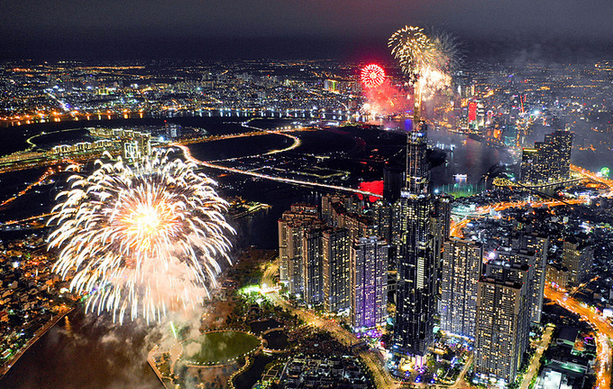

20/04/2022
Sau một năm dừng để chống dịch, 30/4 năm nay thành phố sẽ bắn pháo hoa mừng ngày thống nhất đất nước. Thông tin được ông Trần Thế Thuận, Giám đốc Sở Văn hóa và Thể thao TP HCM cho biết chiều 20/4.Theo đó, dịp lễ 30/4 thành phố dự kiến bắn pháo hoa tại hai điểm thay vì 5 điểm như mọi năm, gồm khu vực đầu đường hầm sông Sài Gòn (TP Thủ Đức) và Công viên văn hóa Đầm Sen (quận 11).
Trong năm 2021, TP HCM đã 4 lần không tổ chức bắn pháo hoa vào các dịp 30/4, Tết Dương lịch và Tết Nguyên đán nhằm hạn chế tụ tập đông người trong bối cảnh Covid-19 bùng phát.
Việc bắn pháo hoa thực hiện theo Nghị định 36/2009 của Chính phủ. Theo đó, vào dịp giao thừa Tết Nguyên đán, lễ 2/9, các thành phố trực thuộc Trung ương và Thừa Thiên Huế được bắn pháo hoa tầm cao và tầm thấp; các tỉnh còn lại bắn pháo tầm thấp; thời lượng không quá 15 phút. Riêng Hà Nội và TP HCM được bắn pháo hoa cả dịp 30/4.
Ngoài ra, các dịp bắn pháo hoa như thành lập các tỉnh, thành phố trực thuộc Trung ương; sự kiện văn hóa, du lịch, thể thao mang tính quốc gia, quốc tế; Tết Dương lịch... do Thủ tướng quyết định.
Thu Hằng
©2018 | FIT_TDC